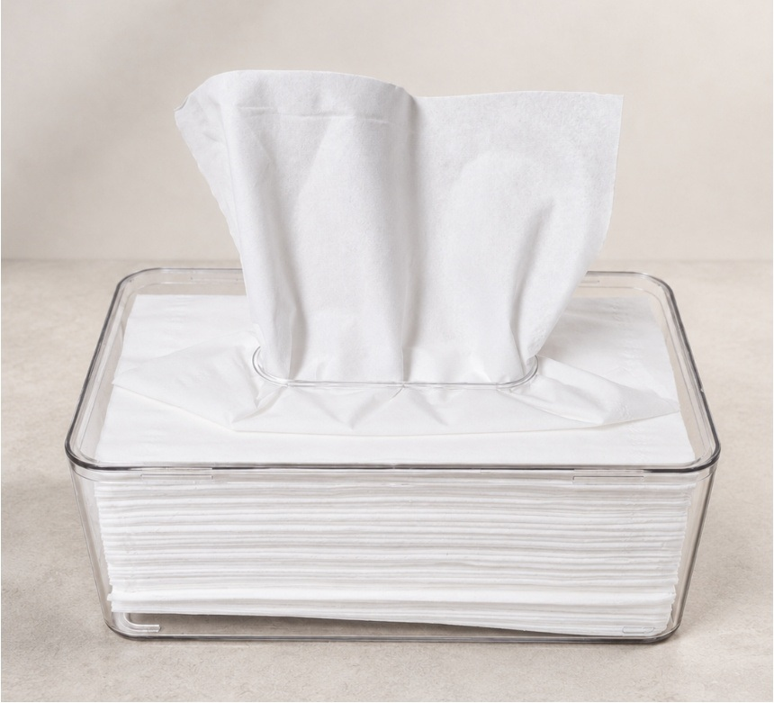
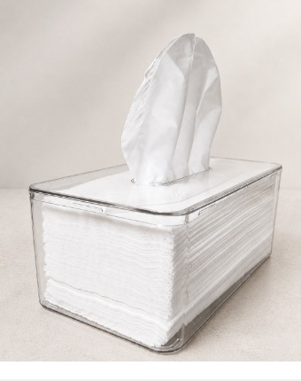
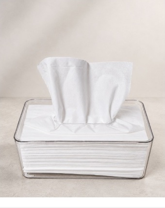
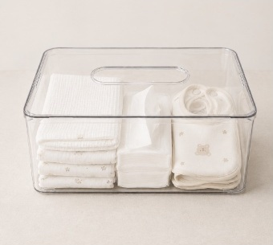
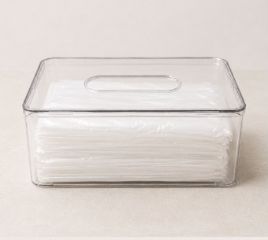
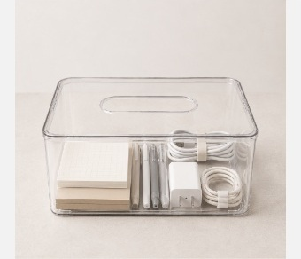
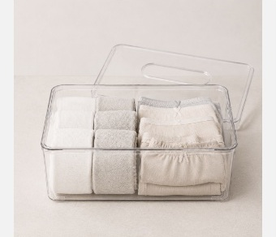
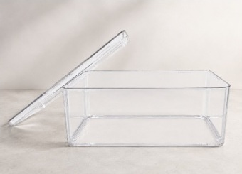
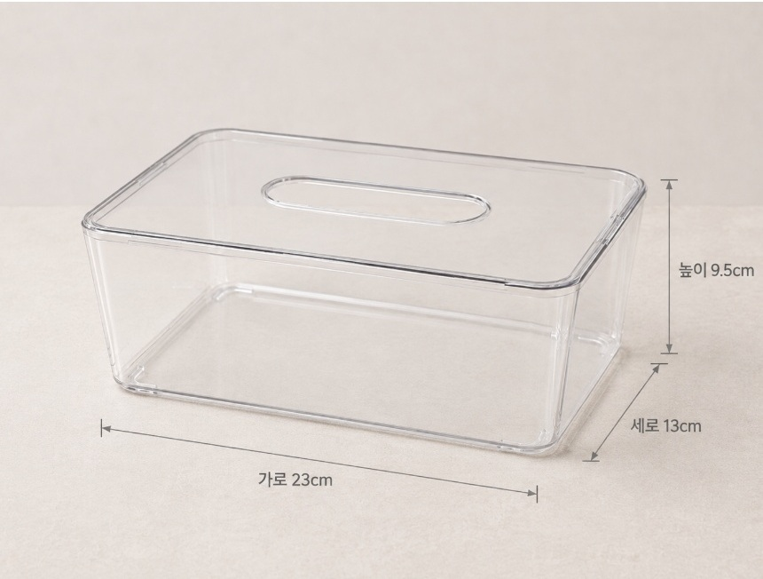

티슈는 단정하게, 필요한 생활소품은 한눈에.
어느 공간에 두어도 자연스럽게 어우러집니다.

거실, 침실, 화장대, 사무실처럼 자주 머무는 공간에
단정한 수납 자리를 만들어 보세요.


내용물이 보여 찾기 쉽고, 뚜껑을 열어 간편하게 넣을 수 있습니다.

아기용품 정리
비닐봉투 정리
문구·사무용품 정리
소형 의류 수납분리되는 상단 뚜껑을 열고
케이스 내부를 비워 준비합니다.

사용할 물건을 가지런히 담고
꺼내기 편한 방향으로 정리합니다.
티슈는 상단 타원형 구멍으로 빼고
필요한 만큼 한 장씩 꺼내 사용합니다.

측정 위치와 방법에 따라 약간의 차이가 있을 수 있습니다.
배송 일정과 배송비는 주문 전 판매처의 배송 안내를 확인해 주세요.
도서·산간 지역은 추가 일정이나 비용이 발생할 수 있습니다.
교환과 반품의 접수 방법, 가능 기간 및 비용은 구매한 판매처의 정책을 확인해 주세요.
사용 흔적이나 상품 훼손이 있는 경우 처리가 제한될 수 있습니다.
제품 표면은 부드러운 천으로 닦아 주세요. 강한 충격과 날카로운 물체로 인한 긁힘에 주의해 주세요.
촬영 환경과 화면 설정에 따라 실제 색감과 투명도가 다르게 보일 수 있습니다.
※ 본 상세페이지의 규격·재질·원산지 정보는 제공된 기존 제품 자료를 기준으로 작성했습니다.